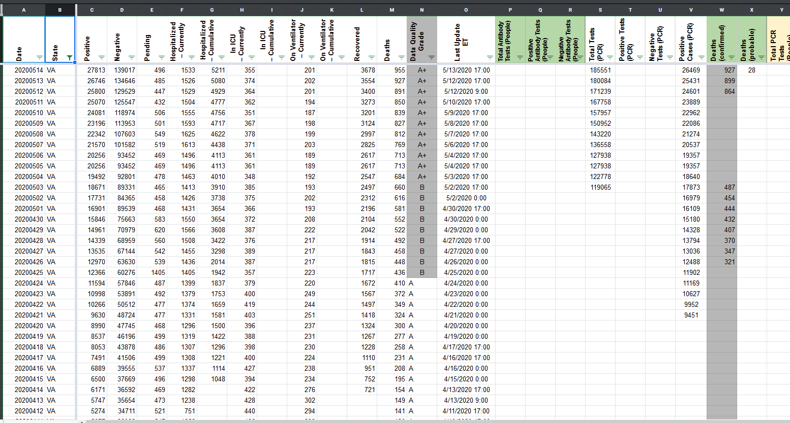
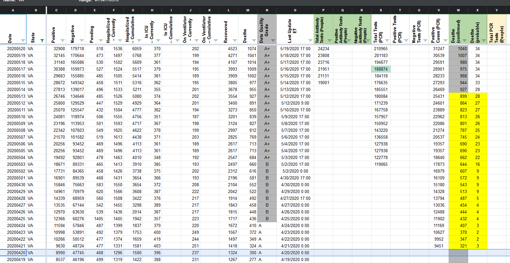

[VA] Deaths - PCL Historicals and WS2
Need to amend historical total-deaths, historical confirmed-deaths and historical probable-deaths on 5/13 and prior.
Confirmed-deaths missing or incorrect on 5/13 and prior (ex. on 5/2, we recorded 454 confirmed-deaths, but historical screenshot shows 572).
Note historical screenshots for VA from COVID Tracking Project external-facing website. https://covidtracking.com/data/state/virginia#historical Confirmed and probable began to be reported in the dashboard starting with the 4/21 12:19pm screen capture (not 6am one). Here is the first one where we see confirmed and probable called out. https://covidtracking.com/screenshots/VA/VA-20200421-121931.png
{kind=link}
pscsharon added the label Data quality on June 25, 2020 at 6:44 am
karaschechtman removed the label Data quality on June 25, 2020 at 7:14 am
karaschechtman added the label PCL/SVP Historicals on June 25, 2020 at 7:14 am
muamichali closed the issue on July 2, 2020 at 7:21 am
I updated the values based on screenshots.
BEFORE 
AFTER 